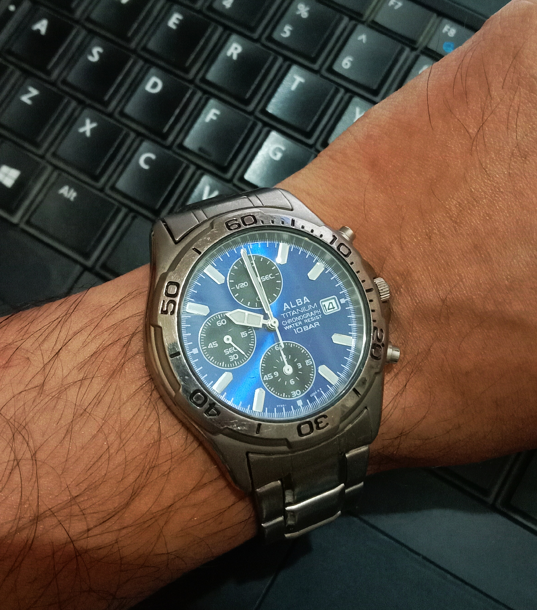
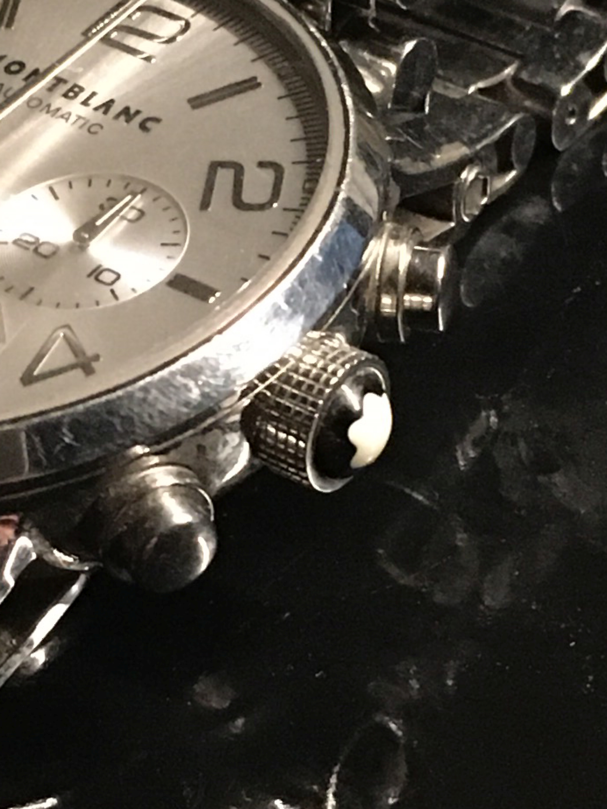
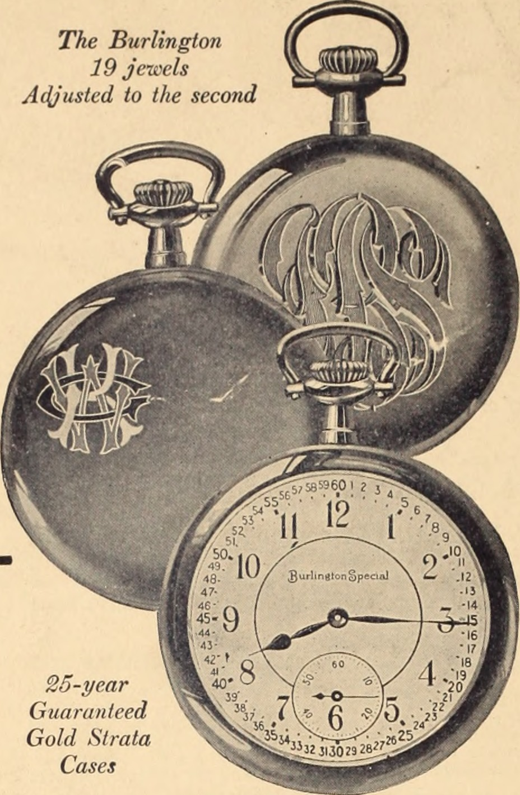
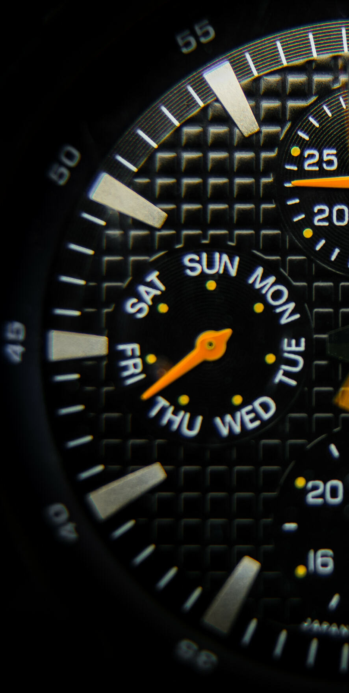
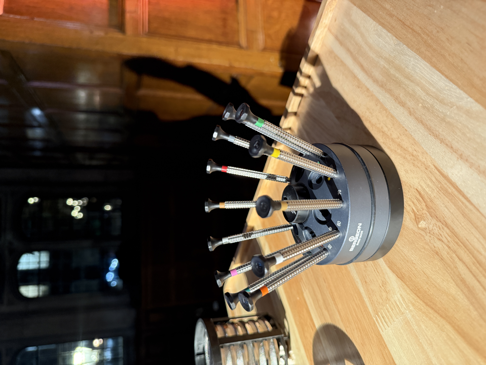
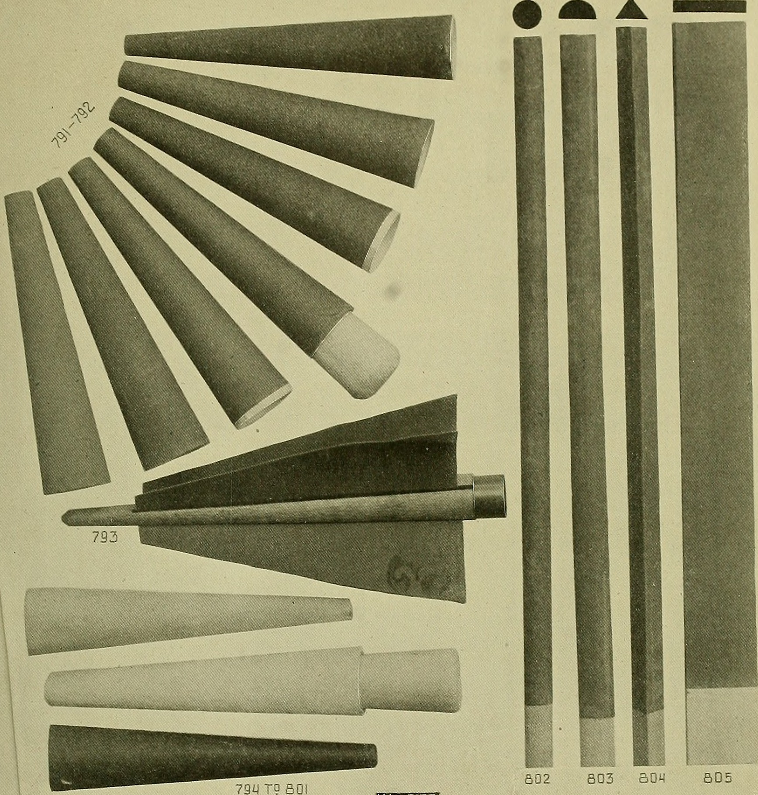
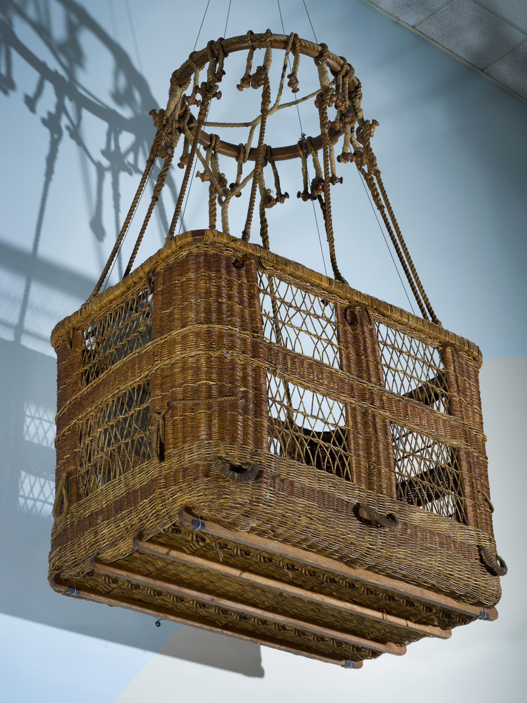

Master Complications & Bespoke Calibers
Each timepiece is individually numbered, handcrafted in limited annual editions of twelve pieces, and calibrated to certified chronometric standards.
The Four Sovereign Silhouettes
From classic dual-pusher split-seconds chronographs to tourbillon-regulated high complication calibers.

The Sovereign Rattrapante IX
Dual column-wheel split-seconds chronograph with instantaneous 30-minute counter, coaxial crown pusher, Clous de Paris guilloché dial, and platinum 950 case.

The Coaxial Monopusher IX
All chronograph start, stop, and reset functions driven sequentially through a single coaxial button embedded in the fluted winding crown for pure case symmetry.

Split-Seconds Tourbillon IX
Single-minute flying tourbillon cage rotating at 6 o'clock coupled to our dual column-wheel split-seconds train with isolator wheel compensation.

Chronomètre de Marine
Twin-barrel architecture providing 80 hours of unyielding torque, high-contrast enamel chapter ring, and thermal blued steel Breguet hands.
The Four Stages of Caliber Execution

Ebauche Fitting
Components are pre-assembled on test plates to test clearance tolerances down to 0.005mm before final decoration.

Spéculaire Polishing
Steel parts receive black mirror polish on zinc and tin laps using fine diamantine abrasive powder.

Case Enclosure
Solid 950 platinum cases undergo micro-lap satin brushing and concave bezel diamond-paste buffing.
5-Position Chronometry
Regulated across 5 spatial positions and 3 temperatures over 15 days to achieve chronometer certitude.